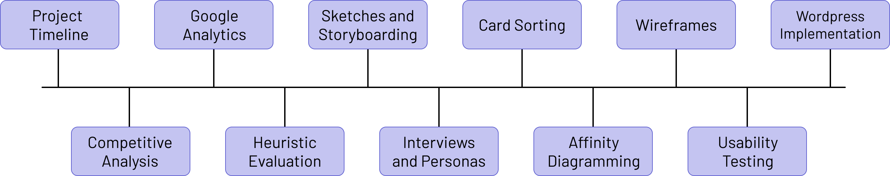
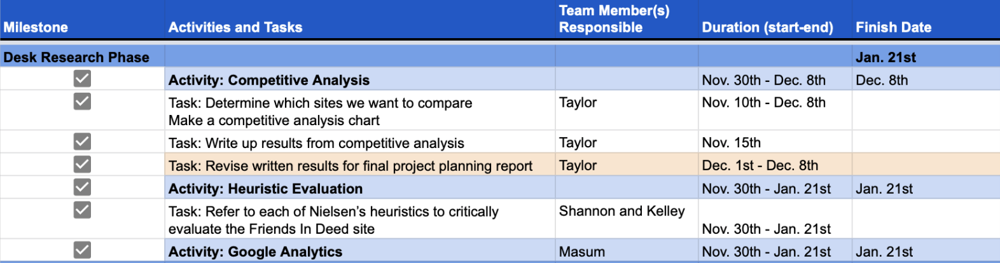
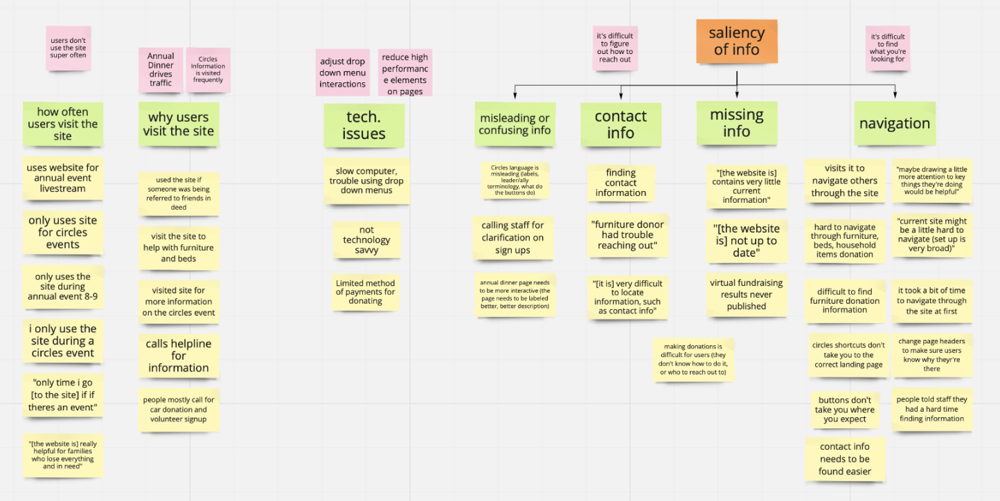
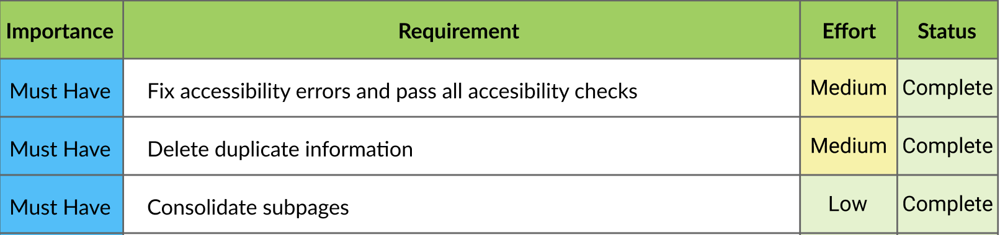
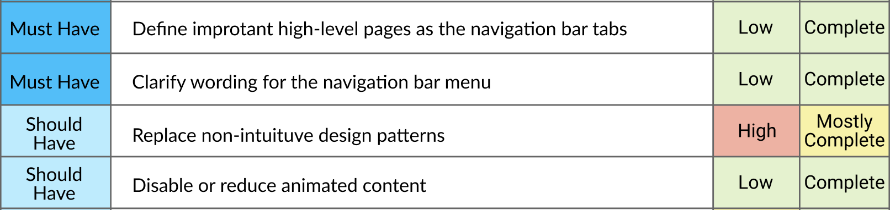
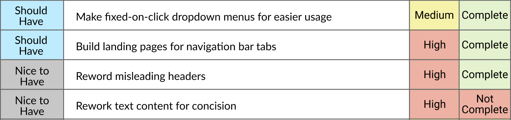
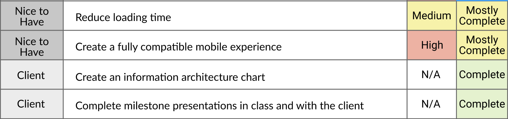

Friends In Deed Web Design Capstone Project
View final reportOverview
All seniors in the BSI program take a year long client-based capstone class in their respective major concentrations. The project was split by semester, the first semester focusing on project planning, and the second semester focusing on UX research and design. My group worked with Friends In Deed, an Ann Arbor/Ypsilanti based nonprofit who offers short term and long term services to the greater Ann Arbor community. Our goal was to conduct user research and determine what the users' experience is currently like on the site. We used those results and our knowledge learned throughout our undergraduate program to redesign and restructure the site to aid in organization, accessibility, and ease of use.
Project Timeline
Throughout the entire first semester of our capstone project, our team focused on our client's requirements, setting deadlines, and making a project plan for second semester. We only had about 14 weeks to complete all of our research and design, so we had to be very efficient and organized with our design process. In this stage, we focused on defining our project scope, research goals, timeline, and necessary resources. Our team ended this process by writing a project design report and creating a project timeline for our second semester to outline our project phases and tasks. Both of these documents, as well as more details about the beginning of our project, can be viewed below.
 View full timelineCompetitive Analysis
A competitive analysis was conducted by comparing the Friends In Deed site with similar nonprofit organization websites in Ann Arbor. We identified competitors by searching for nonprofit organizations around Ann Arbor and southeast Michigan of all different sizes, eventually choosing to evaluate the sites of Friends In Deed, United Way 211 of Washtenaw, Salvation Army of Washtenaw County, and Goodwill.
Google Analytics Report
Google Analytics offers a detailed overview of all the data on the website. The team identified critical metrics based on this data, including but not limited to the average time a user spent on the site, number of returning users, and which devices the users were using the site on. These metrics led the team towards the themes and insights that were focused on in the design process.
Heuristic Evaluation
This method helped the us answer both of our research questions by efficiently evaluating the most glaring usability obstructions that occur on the site without recruiting user participants. Each of us explored the website as if we were an outside user. For each Nielsen's ten heuristics listed, the site was scored to gauge the platform's usability. We gave the site a score out of ten while identifying positives and negatives.
Interviews and Personas
During our original sessions with our client, we discovered that we had three main user segments, including staff, first time site users, and returning Friends In Deed clients. Our team interviewed candidates from each of these segments to get their thoughts on the website. Along with conducting these interviews, we created personas for two of their client segments to get a better idea as to what the user needs and characteristics are by representing them visually.
Card Sorting
During the interview process, we asked the interviewees to complete a card sorting exercise for our research. We separated subsections of every page on the site into cards and let the interviewees sort them into categories they thought worked best together. We got a total of 5 people to participate in the exercise, and we gained valuable insights from their categories that directly influenced our designs.
Affinity Diagramming
To analyze the results of the interviews, our team created an affinity diagram with responses from participants and grouped the feedback in order to see patterns and themes. From here, we drew insights based on any patterns and made note of how those insights might inform future design decisions. We used Miro to collaborate effectively on this board since we were all working remotely.
UX Requirements
When defining our UX requirements, we separated them into four groups: must have, should have, nice to have, and client requirements (which are based on the work expected from us for the course) based on their importance to the client and our design. We also defined these requirements in terms of effort so we knew how much time and effort these requirements would take. The tasks that were not completed were turned into suggestions for further improvement that we gave to our client in our handover meeting.
   Design Process Overview
Since our project was more focused on information restructuring and less on design, our wirefeames, prototypes, and mockups did not look like typical new designs that other teams were implementing. We used screenshots from the existing site in our low-fidelity wireframes to outline where the information would be placed based on our card sorting exercise. In our mid-fidelity prototypes, we made the navigation menu (as well as some other menus on the site) clickable on Figma and designed some small improvements to the site that were not present yet (like the home carousel menu as well as the our programs and services boxes). Lastly, our group decided to combine our high-fidelity designs and our wordpress implementation to save time and resources and to minimize on duplicate work. This allowed a completely navigable prototype for Friends In Deed to change and implement directly into their site.
Low-Fidelity Wireframes
Due to the nature of our project, the easiest way to create low-fidelity wireframes was to screenshot the elements of the current site that we were going to repurpose, laying them out on different screens to see what would fit best. This allowed us to get a look at the screens before actually creating a prototype, moving elements as needed.
Mid-Fidelity Prototypes
Our team took the low-fidelity mockups and turned them into prototypes by using Figma. These screens allowed us to interact with some of the pages and visualize what certain parts would look like.
High-Fidelity Implementation
Since our client wanted a mock version of the site, we chose to implement our high-fidelity mockup directly on Wordpress. We used all of the elements that appeared on our mid-fidelity prototype, which was useful because most of these elements already live on the site. The sandbox in which the site is housed is not available for the public.